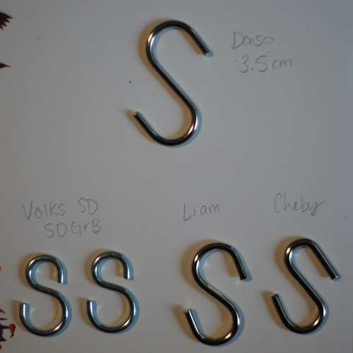
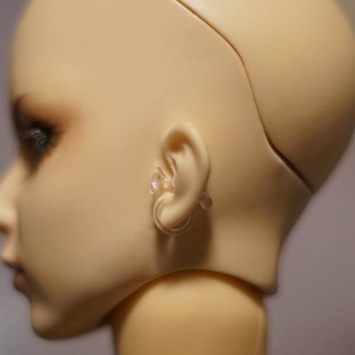
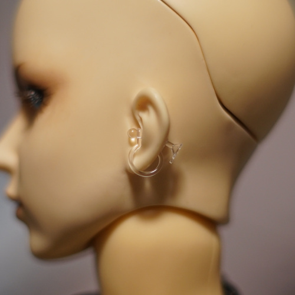
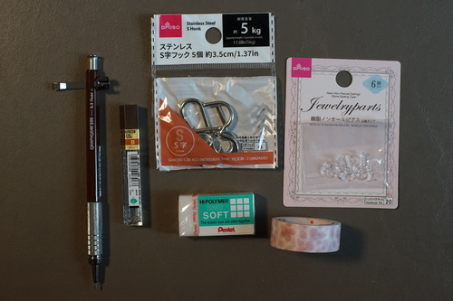
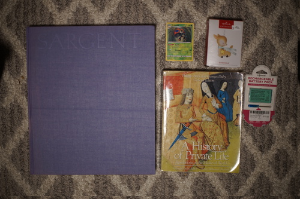

I hope you've been enjoying my advent calendar! Go check it out (and all the other advent calendars). I believe BMH started this in 2021. I found it in 2022 and joined last year. It's a great time and also a total panic every night when you haven't figured out what to upload. I tried to get a head start and be a day early this year, but I already ruined that by day 2!
I've got a couple thrift hauls and a non thrift haul coming up! I don't think they're interesting enough for the advent calendar, so they'll stay here.

Now that No Draw November is over, it's time to start Draw or Die December. Lots of work to do...
Uploading a whole month of sketches to The Internet was a little wild. It's hard to imagine uploading something that is far from perfect and also pretty personal! I decided to do it at the end of November, so page 30 was the only one I drew knowing I would have an audience. There are two censored images in there that I'll uncensor sometime after Christmas and remembering in 4 months.
I uploaded one birthday art of Rio and a page of David Sylvians between this and last November's Will Extravaganza, but just because I wasn't uploading doesn't mean I wasn't practicing. There was more than one filled sketchbook between then and now. I went through the Will Extravaganza and I'm very glad to see I have some amount of consistency now. In my memory, these drawings were a lot better than they actually were!
I hope you'll feel inspired to try drawing after seeing it! I very much wish I had felt it was worth my time to study when I was a teen, but I'm glad I've decided to now. My elementary and middle school art is on this site so you can see how far I've come. Nothing is impossible!!
The one big thing that has driven me nuts (you are NOT going to believe this) is the size of S hooks that Volks uses in their dolls' heads. I remove my dolls' heads nearly every time I change their shirts. Volks uses smaller S hooks that require me to use a strip of ribbon or crochet hook to pull up, while some other brands use larger ones that I can pull up with my finger alone. I only had 2 S hooks in the size I wanted, which Liam and Verona got because I change their shirts the most.
Now I have been searching for properly sized S hooks for a while. I looked in hardware stores and they just weren't right. Too small, too thick, etc etc
During my shopping trip which involved looking at every item in Daiso (a warning to those who take me shopping), I found S hooks that looked to be the correct size. Daiso doesn't do returns, so I did the logical thing and went to the car to grab Pafachan and bring him inside. After some comparisons, I decided they would most likely work!
3.5 cm is definitely the largest you should go in size for a 1/3 doll. I wasn't sure if Hina or Volta's heads would close with it, but they both did. It was small enough that it could still go through the neck hole on all dolls, but it was a bit more of a pain with Hina, who doesn't have the elastic knot hidden inside of her torso like the others. There are 5 in a pack so try to own dolls in increments of 5 if you need to replace them.
I've seen a few Japanese dollers on twitter post pictures of dangle earrings on their dolls using these strange little plastic pieces. After a while, I discovered they're adapters for non pierced ears. I saw them at Daiso at least a year ago, but didn't want to risk them not working because I value $1.75 perhaps more than I should. I know these things exist somewhere on AliExpress or ebay or who knows for much cheaper, but I cannot figure out the correct search term for them. Since I already had Cheby in hand and they looked like they could work, I decided to risk it.
 These do not fit on either Volks head I own. The ear is too thickly sculpted. They fit on both Migidoll heads. Here's both orientations. The "stud" side is supposed to face outwards with a gem placed in the setting. It does not fit over the top of the ear. You probably want to have your doll wear a wig that hides their ears if you use this option.
It's a bummer they don't fit on Hina, since they're who I wanted them for. I guess some boys will end up with dangle earrings instead. Cheby doesn't wear gay earrings. Liam does, and I'm praying they'll fit on Verona and Rio as well.
My other buys from the art store were a .3 GraphGear 500, .3 B lead, and a Pentel eraser. I don't think I actually NEED a .3, but I have been considering it for a while. I feel oddly fond of erasers these days and it's nice to find a good one. The last one I bought at the same store was Pacific Arc Soji eraser and I like it a lot!

For some reason, the previous owner cut the dust jacket into 2 and taped the front on with shipping tape and left the back tucked inside of the book. The spine part of the dust cover is missing and there is a chunk out of the spine of the book.
It's interesting because it's not a card worth faking.
really cute baby deer. I have no idea what godchild means, but I took the printed ribbon off so it doesn't matter.
And a bow themed black CeCe cardigan for $5.99. Very cute! Kawaii goth is coming back in fashion.